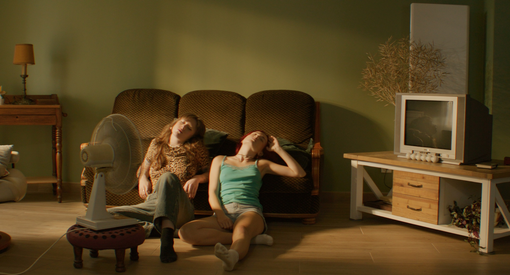
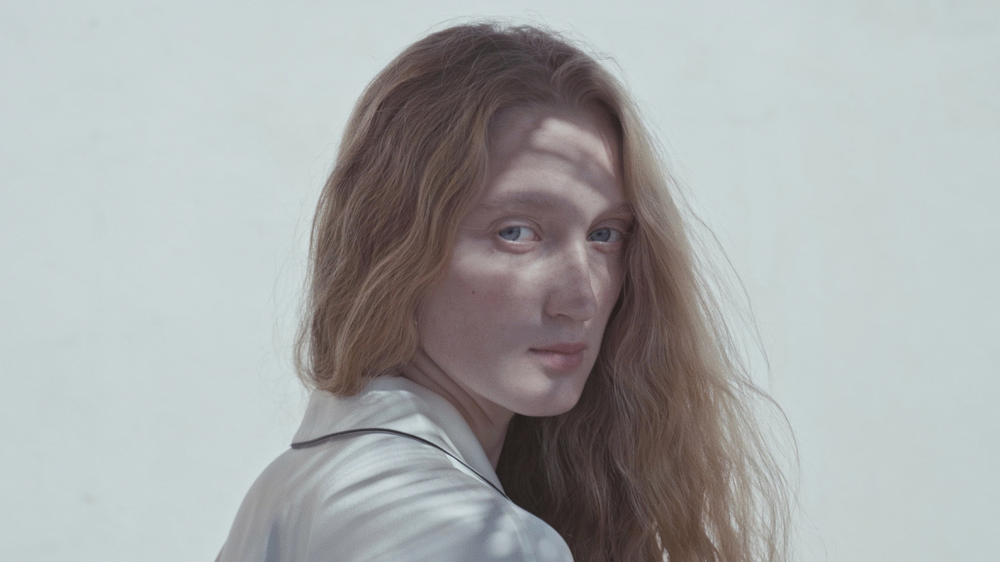

View project ↗Paris, 2025 · Personal work
Film
Photography
Commercial
01 — Selected work
A moving-image practice between intimacy, texture and light.
Film
Selected narrative work.


01.1 — Photography
Personal work.
Commercial
Selected commercial work.
